Osu ist ein Musik-Rhythmus-Spiel, bei dem man auf verschiedene Objekte,
auf unterschiedlichen Weisen mit diversen Tasten drücken musss.
Spielmodi:
Es gibt insgesamt 4 Spielmodi in Osu:
Osu:Standard
Osu:Mania 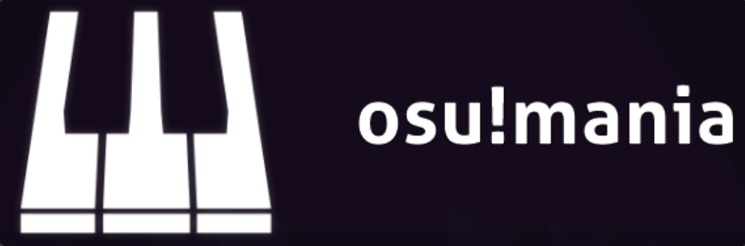
Osu:Taiko 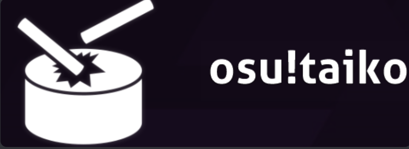
Osu:Catch 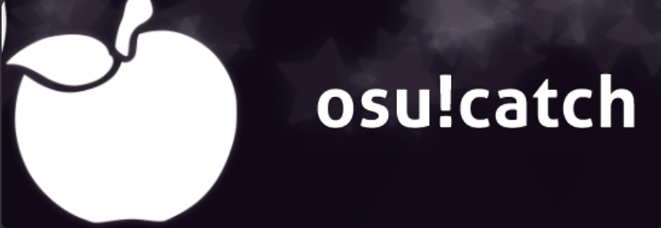
Jedes dieser Spielmodi funktioniert anders und sie haben alle verschiedene Objekte.
Zu dem haben alle eine separate Rangliste und normalerweise spielt man nur 1, maximal
2 von den Modi.
Objekte:
In Osu:Standard gibt es 3 Objekte:
Circles, 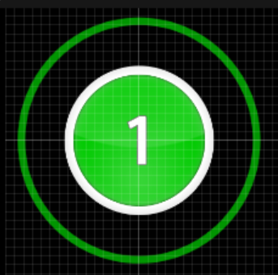
Sliders 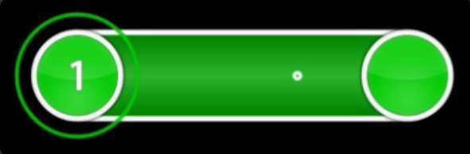
und Spinners 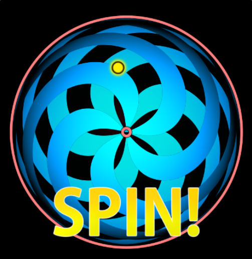
Die Circles sind
die ganz normalen Kreise, bei denen man einfach im richtigen Moment drauf drücken muss.
Bei den Sliders muss man die Taste gedrückt halten und ihm bis zum Schluss folgen und beim Spinner
versucht man so schnell wie möglich den Spinner zu spinnen.
Osu:Mania ist auf einem Klavier basiert. Es fallen Tasten von oben, die man dann auch
im richtigen Moment drücken muss. Jedoch ist die grösse des Klaviers immer Unterschiedlich,
was von 4 Tasten bis zu 9 oder sogar noch mehr Tasten in seltenen Fällen gehen kann.
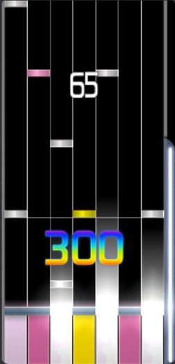
Osu:Taiko ist ein Trommel Spiel, für das es auch eine separate Trommel hat, die man
kaufen kann. Jedoch geht es auch mit den Tasten, aber hier ist der Rhythmus besondern
schwierig.
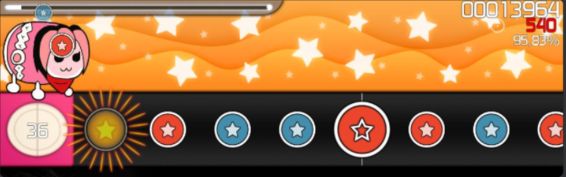
Zum Schluss noch Osu:Catch, wo verschiedene Früchte vom Himmel fallen und man sie auffangen
muss. Je nach grösse und Variante der Frucht gibt es unterschiedlich viel Punkte.
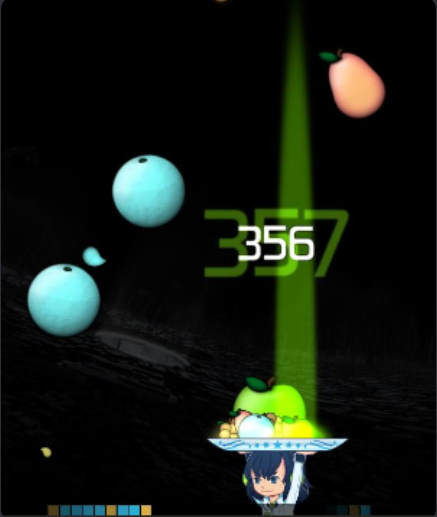
Multiplayer:
Eine Multiplayerlobby kann aus bis zu 16 Spielern bestehen. Der Host der Lobby kann die Maps
auswählen, die sie dann spielen werden, aber er kann auch weiter gegeben werden. Normalerweise
gewinnt der, der die höchste Punktzahl erreicht, aber es gibt zum Beispiel auch einen
Team-Modus, bei dem man 2 Teams machen kann, oder auch einen Co-op-Modus, wo immer abwechselnd
gespielt wird.
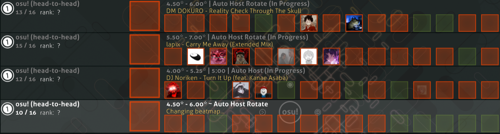
PP:
PP (Performance Points) sind Punkte, die man bekommt, wenn man ein Level abschliesst. Umso
schwerer das Level, umso mehr PP gibt es. Auf diesen Punkten basieren auch die jeweiligen
Ranglisten drauf. Wie oben gesagt, gibt es für jeden Modus eine andere Rangliste, bei der
man natürlich versucht so hoch zu klettern wie es geht.
Turniere:
Das berühmteste Turnier ist das Osu-World-Cup (OWC), das Meistens am Ende des Jahres statt findet.
Dort spielen Länder in einem Team von 8 Spieler gegeneinander, wobei immer nur 4 vom Team gleichzeitig
spielen. Das heisst, es ist immer ein 4vs4, wo das Team selber entscheidet wann sie wen wechseln, da
sie unendlich viele Wechsel haben, und geht von einem Best of 5 am Anfang bis zu einem Best of 7 am
Ende geht. Aber es gibt auch Turniere für die schlechteren Spieler, wie zum Beispiel das 5-Digit-Tourney,
wo alle Spieler zwischen dem Rang 10000 und 99999 mit machen können.
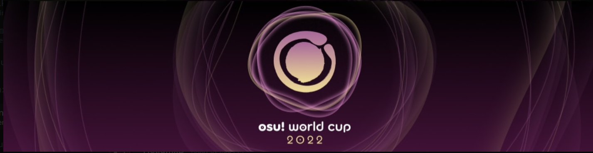